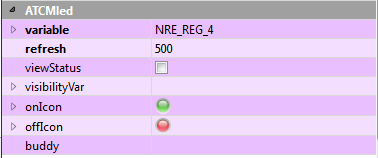

Selezionando l’elemento, le sue proprietà appaiono nella finestra in basso a destra della finestra di Qtcreator nella sezione intitolata ATCMled.
Modificando una o più di queste proprietà si può personalizzare l’aspetto grafico ed alcune funzionalità. Per effettuare la modifica occorre selezionare la colonna destra della riga corrispondente.

In dettaglio per le funzionalità saranno disponibili:
variable: la variabile della Crosstable di destinazione su cui scrivere il valore del led.
viewStatus: se vistato avrà un colore rispettivamente rosso o verde nel caso in cui il settaggio della variabile variable sia fallito o meno e se è visibile il bordo.
visibilityVar: se si vuole legare la visibilità o meno dell’oggetto a seconda dello stato di una variabile, si dovrà inserire il nome della variabile di destinazione.
In dettaglio per l’aspetto grafico saranno disponibili:
onIcon: contiene l’icona da associare allo stato on.
offIcon: contiene l’icona da associare allo stato off.
NOTA: in tutte le Property, escluso gli ATCMplugin, è possibile visualizzare il “Context Help” di Qt per avere una descrizione sul funzionamento: selezionare la riga desiderata e premere il tasto “F1” della tastiera.
Per utilizzare via codice le proprietà dell’oggetto scrivere in Help→Index: QLabel